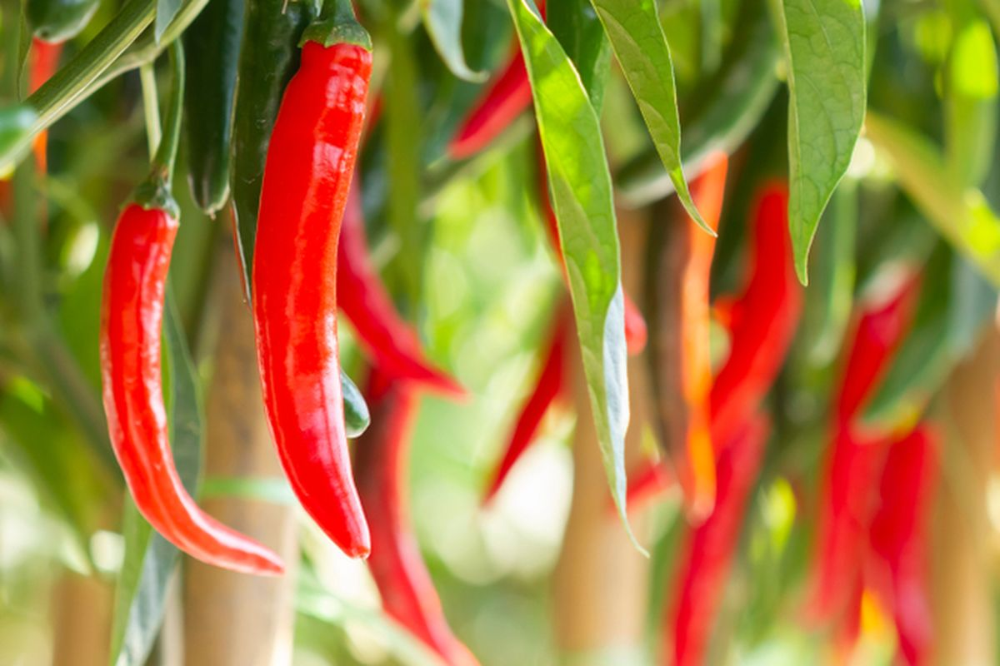

.jpg)
CabaiKu
Tentang Panduan Ini
Mengapa tanaman cabai memerlukan pendekatan perawatan yang berbeda di setiap musim, dan apa yang membuat panduan ini berbeda.
Cabai (Capsicum annuum) merupakan tanaman yang sangat responsif terhadap perubahan lingkungan. Sistem perakarannya relatif dangkal — 60-70% akar tersebar di lapisan 0-20 cm tanah — membuatnya sangat rentan terhadap fluktuasi ketersediaan air.
Di musim kemarau, cabai menghadapi stres kekeringan yang menyebabkan flower drop (gugurnya bunga sebelum menjadi buah), buah berukuran kecil, dan kerusakan akibat hama penghisap yang dominan saat kondisi kering.
Di musim hujan, genangan dan kelembapan tinggi memicu ledakan penyakit jamur dan bakteri — terutama Phytophthora capsici yang bisa menghancurkan seluruh tanaman dalam hitungan hari. Pupuk yang diaplikasikan juga mudah tercuci oleh air hujan (leaching).
Panduan ini menyajikan strategi spesifik untuk kedua musim, mencakup 16+ jenis pupuk dengan dosis tepat berdasarkan fase pertumbuhan, teknik penyiraman, pencegahan leaching, dan penerapan pupuk hayati.
.jpg)
Memenuhi parameter ini adalah fondasi keberhasilan budidaya cabai di musim apapun.

Setiap fase memiliki kebutuhan air dan hara yang berbeda. Pemupukan yang tepat waktu menentukan hasil panen.
.jpg)
Perakaran mulai terbentuk. Kebutuhan air rendah (0.1-0.5 L/tanaman/hari). Pupuk dasar SP-36 + organik di lubang tanam. Susulan pertama NPK di HST 14.
.webp)
Pertumbuhan daun dan batang pesat. Kebutuhan air meningkat (0.5-2 L/tanaman/hari). NPK + KCl susulan setiap 14 hari. Mulsa penting di kemarau.
.jpg)
Bunga muncul, pembuahan dimulai. Kebutuhan air puncak (2-3 L/tanaman/hari). KCl/SOP tinggi untuk kualitas buah. CaNO₃ foliar cegah blossom-end rot.
.webp)
Buah matang secara bertahap. Panen pertama sekitar HST 70-80. KCl susulan terakhir untuk kualitas. Air dikurangi menjelang akhir masa tanam.
Memahami perbedaan mendasar membantu Anda menyiapkan strategi yang tepat sebelum musim berganti.
| Aspek | Musim Kemarau | Musim Hujan |
|---|---|---|
| Suhu | 28-36°C (tinggi) | 24-30°C (sedang) |
| Kelembapan | 40-65% (rendah) | 80-95% (sangat tinggi) |
| Curah Hujan | <100 mm/bulan | 200-400 mm/bulan |
| Risiko Utama | Kekeringan, flower drop, stres panas | Genangan, busuk akar, antraknosa, leaching |
| Penyiraman | 2x sehari, 8-12 L/m² | Dikurangi/hentikan jika hujan >5mm |
| Pupuk Prioritas | KCl/SOP, Kompos, Mikoriza, CaNO₃ | Dolomit, Trichoderma, NPK 12-12-17, SP-36 |
| Teknik Kunci | Mulsa 5-8 cm, drip irrigation, shade net | Bedengan 25-30 cm, drainase, naungan UV |
| Hama Dominan | Kutu daun, thrips, tungau merah, lalat buah | Keong mas, ulat grayak, kutu putih |
| Penyakit Dominan | Embun tepung (minor) | Antraknosa, busuk akar, layu bakteri, bercak daun |
| Aplikasi Pupuk | Sebelum/sesudah irigasi | Saat cuaca cerah diprediksi 2-3 hari |

Seluruh informasi di panduan ini disusun berdasarkan literatur agronomi dari lembaga penelitian dan perguruan tinggi terpercaya di Indonesia dan internasional.
Pilih strategi perawatan sesuai musim saat ini.